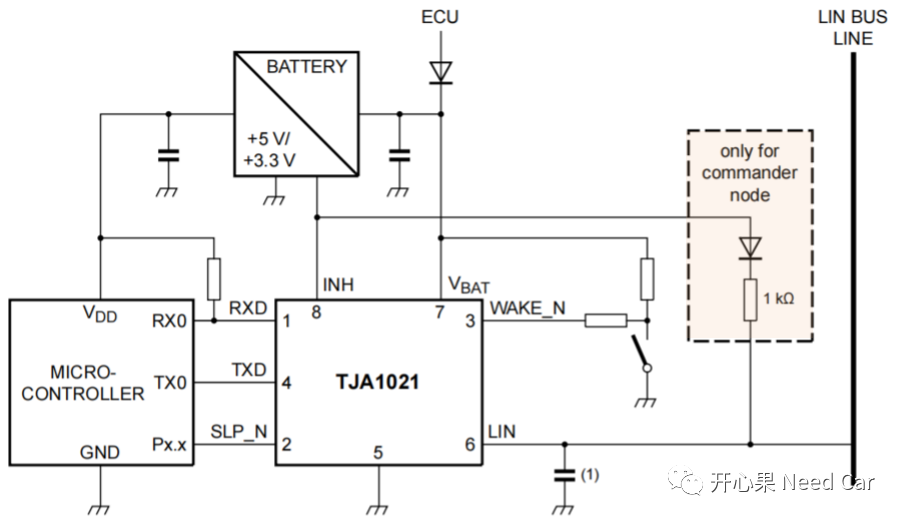
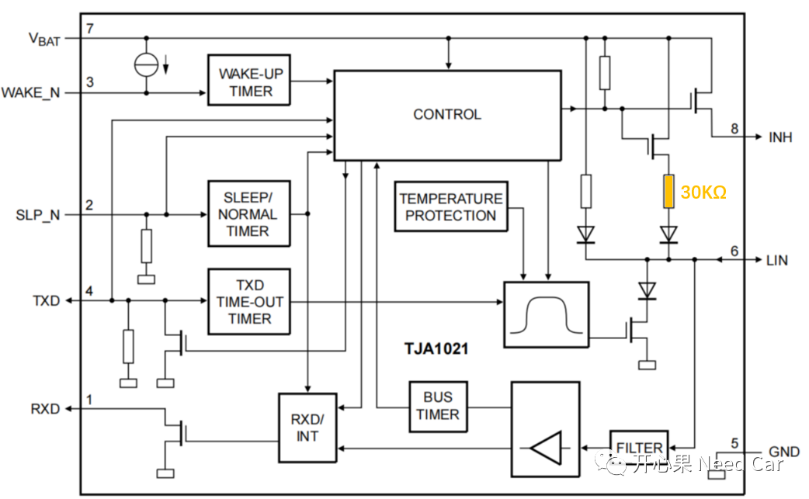
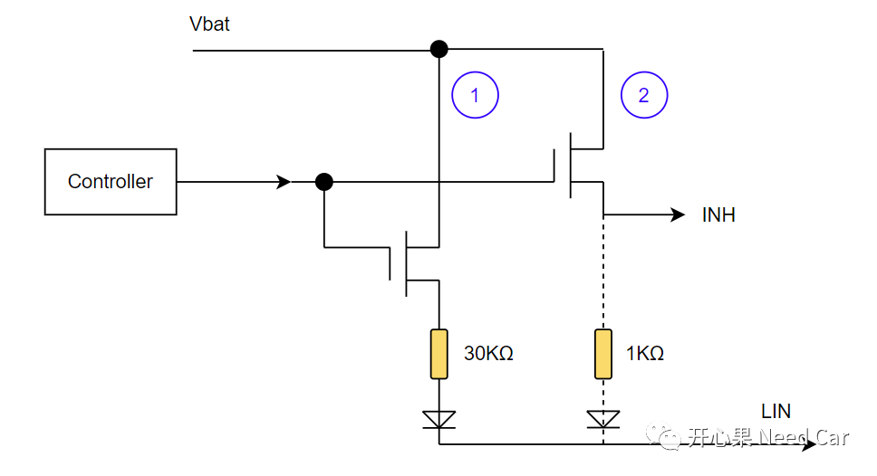
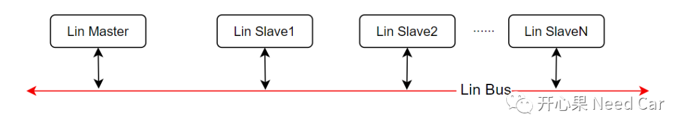

开心果 Need Car · 2023-08-04T09:57:00+08:00 · 微信原文
Lin（Local Interconnect Network）总线开发的小伙伴是否有过这样的疑问：为什么主节点（Master）的设计中，需要增加一个1KΩ的上拉电阻呢？如下所示：

1、Lin收发器的内部结构

如上图，可以看出，在LIN端口的内部有一个30KΩ电阻（responder termination resistor），当收发器进入Standby Mode时，responder termination resistor打开，这个电阻相对较大，降低了总线的驱动能力。那么，如何才能增大总线的驱动能力呢？
2、增强总线驱动能力措施

当然，外部的上拉电阻也需要配合对应的电容，进而获取更稳定的波形。
（二）为什么在Master端增加？
同一个Lin网络，各Lin节点均挂接在一根Lin总线上，所以，在一个节点位置增强即可，而Master作为Lin通信的调度者，放在Master端增加1KΩ更合适。

往期精彩回顾
UDS基础：正响应抑制位（suppressPosRspMsgIndicationBit）详解